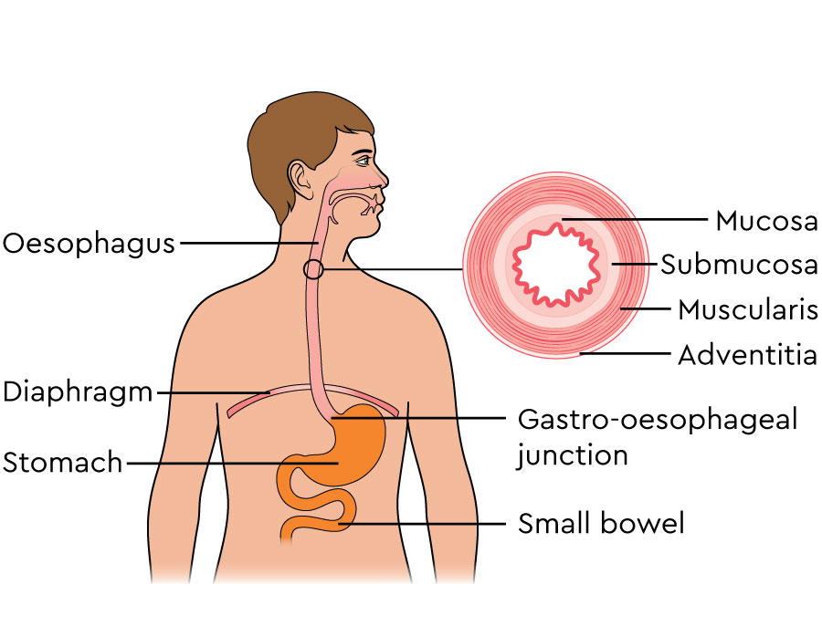

The oesophagus 🍽️ is a long muscular tube 🧵 that connects
the mouth 👄 to the stomach 🍲. Its main function is to
transport food 🍕 and liquids 🥤 after swallowing.
When you swallow 🤏, the oesophagus uses a special movement
called peristalsis 🔄, where muscles contract and relax in
waves 🌊 to push food downward smoothly.
It also has a small valve 🚪 at the bottom, called the
lower esophageal sphincter, which opens to let food into
the stomach 🍲 and then closes to prevent food and acid 🔥
from coming back up.
The oesophagus does not digest food ❌🍽️, but it plays an
important role in the digestive system 🍽️ by ensuring
that food reaches the stomach safely and efficiently ⚡.
This process happens automatically 🤖 without us thinking,
showing how well the body systems work together 🔄.
